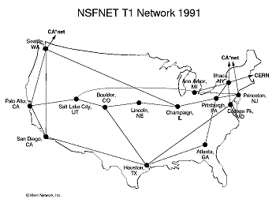

Creation of the NSFnet
The division between the differing university networks was seen as a major problem to many in the growing Internet community. Adding to the growing number of networks were the government-run networks by the Department of Energy (DOE), the National Aeronautics and Space Administration (NASA), and the National Science Foundation (NSF) funded CSnet. To alleviate the problem of connection between the networks the NSF funded the creation of the NSFnet in 1986. This new network not only unified many of the preexisting research networks, but also created a "backbone" for high speed, national communication between the NSF funded "supercomputer centers." The NSFnet also strengthened the standard of TCP/IP by choosing this as the required protocol for the network. The popularity of the network grew very quickly.
The 56Kbps modems that were used at the beginning of the project (the same speed that most PCs connect to the Internet at today), soon had to be upgraded to T1 (1.544 Mbps, nearly three times the original speed) lines after just two years. <T> The lines were again upgraded to T3 lines in 1992, bringing the network to eight the speed from the original 56Kbps (NLANR). The popularity of the NSFnet drove its need for constant physical upgrades. This popularity caused many to see the NSFnet as "The Internet," however only those who were connected with research institutions could utilize the network.
NSFnet as it was after the 1991T1 upgrade
The Acceptable Use Policy (AUP)
of the NSFnet prohibited any use of the network for commercial purposes.
Consequently, those in the business sector had to create their own, separate
network. CIX (the Commercial Internet eXchange) was formed by existing
commercial networks in 1991 to satisfy this need. The for-profit CIX members
all connected to a router in Santa Clara, CA. However, since the eXchange
itself was not for-profit, its members were able to connect to the NSFnet;
the only restriction was that they were not allowed to send any information
over the government network. This restriction caused many in the business
world to squirm. A concentrated effort to commercialize the Internet had
to be orchestrated to attempt to change the current policy.